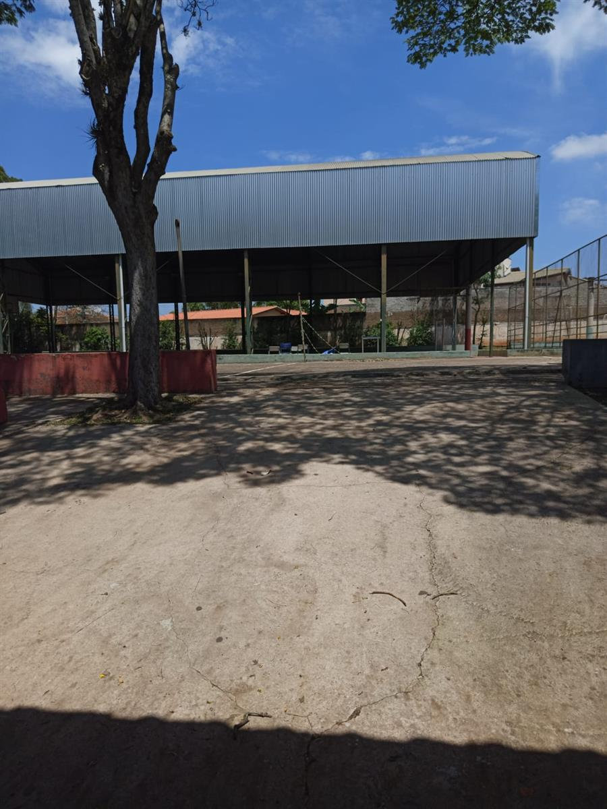
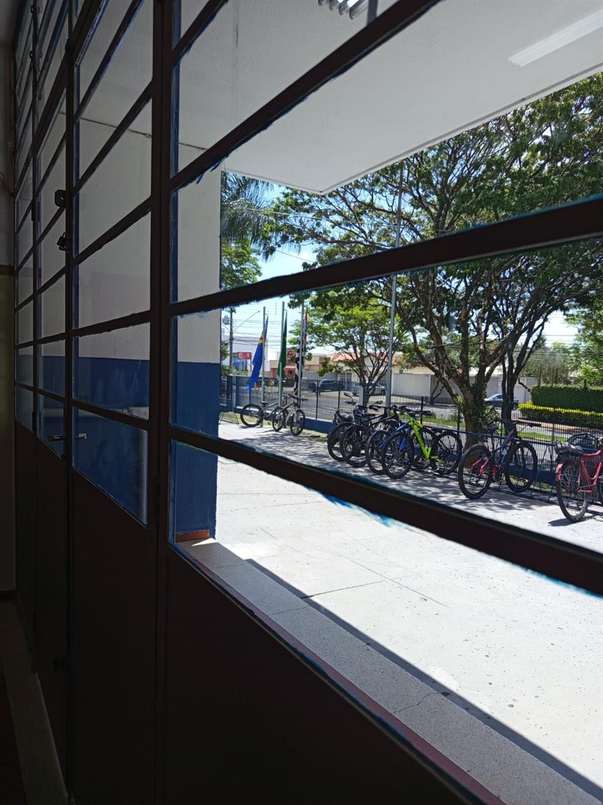

Onde estamosCerquilho, São Paulo

Educação · Cerquilho · São Paulo
Uma escola para aprender,
conviver e crescer.
Conheça a Escola Arthur Da Silva Bernardes Presidente e nossa proposta de acolhimento, conhecimento e formação cidadã.
Conheça nossa escolaNossa identidade
Educação que conecta pessoas e oportunidades

A Escola Estadual Arthur Da Silva Bernardes Presidente integra a rede pública de ensino e recebe a comunidade escolar em Cerquilho.
Nosso compromisso é promover um ambiente seguro, acolhedor e estimulante, onde estudantes possam desenvolver conhecimentos, habilidades e responsabilidades para a vida em sociedade.
Acolhimento
Relações respeitosas e um ambiente preparado para todos.
Aprendizagem
Conhecimento, participação e desenvolvimento contínuo.
Cidadania
Responsabilidade, diversidade e compromisso coletivo.
Conheça a escola
Espaços e oportunidades
Uma instituição voltada ao aprendizado, à convivência e ao desenvolvimento dos estudantes.
Ambiente de aprendizagem
Conteúdos, atividades e acompanhamento voltados ao percurso escolar dos estudantes.
Convivência escolar
Espaços para integração, participação da comunidade e experiências coletivas.
Informação e orientação
Canais oficiais para acompanhar atividades, serviços e comunicados da unidade.
Informações oficiais
Comunicados e agenda
Esta área reúne informações institucionais e avisos da unidade. Consulte os canais oficiais da escola para atualizações.
Nenhum comunicado publicado nesta página
Novas informações poderão ser adicionadas pela equipe da escola.
Nossa unidade
Um olhar pela escola
Conheça a estrutura da unidade em Cerquilho.